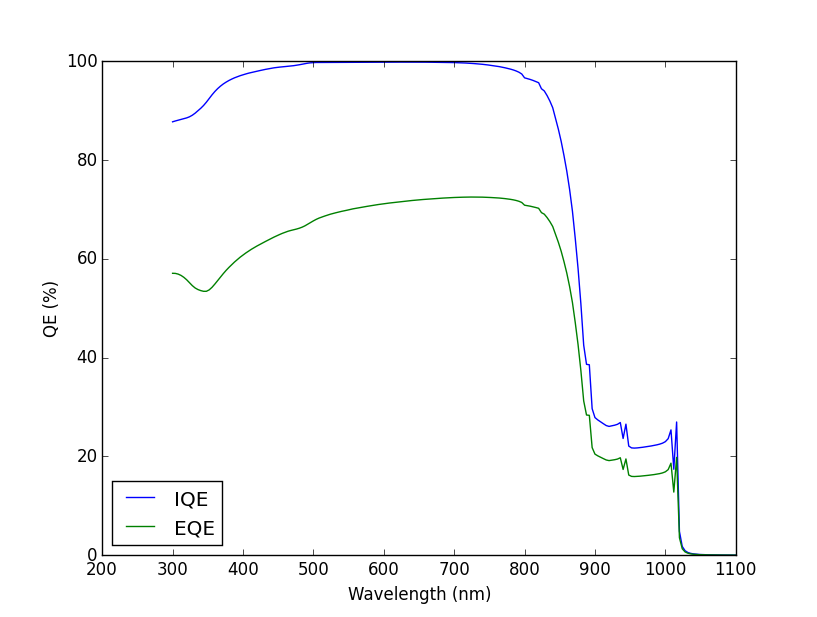

Drift Diffusion Utilities¶
This module is the interface between Python and Fortran. It takes a structure created with the tools in Device Structure and dumps all that information into the Fortran variables. Then, it runs the selected ‘virtual experiment’. This process is completeley transparent for the user who only needs to run the desired experiment with the structure as the input.
Virtual experiments¶
At the end of this page there is a detailed description of the format of all the functions withi this module, but here we focuse in the more practical aspect, including also exambles of usage.
-
ProcessStructure(device[, wavelengths=None, use_Adachi = False])¶ Dumps the structure of the device into the fortran code and calculates an apropiate mesh, based on the values of the mesh_control variable. An initial estimation of the quasi-Fermi energies, electrostatic potential and carrier concentration is also performed. This will be used as inicial condition for the numerical solver. Absorption coeficients are not calculated unless wavelengths is given as input.
If use_Adachi = True, the absorption is calculated (if necesary) using the method described by S. Adachi in [1]. Otherwise, interpolated experimental data is used.
Output (see Output dictionary): Properties
-
Equilibrium(device[, output_info=2, wavelengths=None, use_Adachi = False])¶ Solves the Poisson-DD equations under equilibrium: in the dark with no external current and zero applied voltage. Internally, it calls ProcessStructure. Absorption coeficients are not calculated unless wavelengths is given as input.
output_info controls how much information is printed in the terminal by the solver. It can be 1 (less) or 2 (more).
Output (see Output dictionary): Properties and Bandstructure
-
ShortCircuit(device[, sol="AM1.5d", rs=0, output_info=1, use_Reflection=True, use_Adachi = False])¶ Solves the Poisson-DD equations under short circuit conditions: current flowing trhought the structure due to the light absorbed and zero applied voltage. It calls internally to Equilibrium before appliying the illumination. sol can be a string with the name of the standard spectrum to use - ‘AM1.5d’, ‘AM1.5g’ or ‘AM0’ [2]- or an object of class solcore3.PDD.Illumination (see Illumination). If one of the standard spectra is used, the default wavelength range will be from 300 nm to 1100 nm every 4 nm.
use_Reflection controls whether the calculation should account for the front surface reflection or not.
output_info controls how much information is printed in the terminal by the solver. It can be 1 (less) or 2 (more).
Output (see Output dictionary): Properties, Bandstructure and Optics
Example 1: We use as starting point the structure created in the example 2 of Device Structure.
import solcore3.PDD as PDD import matplotlib.pyplot as plt # First we load the device structure stored in MyDevice.json MyDevice = PDD.Load('MyDevice') # Then we run two virtual experiments, just calculate the structure under equilibrum and under short circuit conditions. # We use the default settings of the solver. EQ = PDD.Equilibrium(MyDevice) SC = PDD.ShortCircuit(MyDevice) # Finally, we plot the carrier densities in both cases using the information stored in the output dictionaries plt.semilogy(EQ['Bandstructure']['x']*1e9, EQ['Bandstructure']['n'], 'b', label=' n equilibrium') plt.semilogy(EQ['Bandstructure']['x']*1e9, EQ['Bandstructure']['p'], 'r', label=' p equilibrium') plt.semilogy(SC['Bandstructure']['x']*1e9, SC['Bandstructure']['n'], 'c', label=' n short circuit') plt.semilogy(SC['Bandstructure']['x']*1e9, SC['Bandstructure']['p'], 'm', label=' p short circuit') plt.legend(loc='lower right') plt.ylabel('Carrier densities (m-3)') plt.xlabel('Position (nm)') plt.show()
The result of the above calculation is this:

-
IV(device, vfin, vstep[, output_info=1, IV_info=True, rs=0, escape = 1, sol=None, use_Adachi = False])¶ Calculates the IV curve of the device from V = 0V to V = Vfin. It calls internally to Equilibrium or ShortCircuit, depending if the dark or the lght IV is to be calculated. Voltage steps are equal to vstep in the dark but are dynamically reduced in light IV around the maximum power point and Voc to do a proper mapping of that fast-changing region. If sol is given as input, then the solver calculates the light IV. In this case, escape = 1 ends the calculation when the Voc is reached. IV_info = True prints the Jsc, Voc, Jmpp, Vmpp and FF at the end of the calculation.
Note that the sign of the voltages and the currents for direct biasing the solar cell depends on having a PN or an NP device.
output_info controls how much information is printed in the terminal by the solver. It can be 1 (less) or 2 (more).
Output (see Output dictionary): Properties, Bandstructure at the last voltage point and IV. If light IV, then also Optics.
Example 2: Using the same structure that before, we calculate the dark current, plotting the different components that contribute to it.
import solcore3.PDD as PDD import matplotlib.pyplot as plt # First we load the device structure stored in MyDevice.json MyDevice = PDD.Load('MyDevice') # We use the default settings of the solver to calculate the dark IV. IV = PDD.IV(MyDevice, vfin=1.2, vstep=0.05) # Finally, we plot the different components of the dark current using the information stored in the output dictionaries plt.semilogy(IV['IV']['V'], IV['IV']['J'], 'o', label='Jtot' ) plt.semilogy(IV['IV']['V'], IV['IV']['Jrad'], label='Jrad') plt.semilogy(IV['IV']['V'], IV['IV']['Jsrh'], label='Jsrh') plt.semilogy(IV['IV']['V'], IV['IV']['Jsur'], label='Jsur' ) plt.legend(loc='lower right') plt.ylabel('Current density (A/m2)') plt.xlabel('Voltage (V)') plt.show()
The result of the above calculation is this:

Example 3: Now we calculate the light IV curve under the AM1.5d spectrum assuming Rs = 0 Ohm m2 and Rs = 0.001 Ohm m2
import solcore3.PDD as PDD import matplotlib.pyplot as plt # First we load the device structure stored in MyDevice.json MyDevice = PDD.Load('MyDevice') # We use the default settings of the solver to calculate the light IV. IV = PDD.IV(MyDevice, vfin=1.2, vstep=0.05, sol="AM1.5d") IVrs = PDD.IV(MyDevice, vfin=1.2, vstep=0.05, sol="AM1.5d", rs=0.001) # Finally, we plot the two curves plt.plot( IV['IV']['V'], -IV['IV']['J'], label='Rs = 0 Ohm m2') plt.plot( IVrs['IV']['V'], -IVrs['IV']['J'], label='Rs= 0.001 Ohm m2') plt.ylim(0, 1.1*max(-IV['IV']['J']) ) plt.legend(loc='lower left') plt.ylabel('Current density (A/m2)') plt.xlabel('Voltage (V)') plt.show()
The result of the above calculation is this:
Rs = 0 Rs = 10 Ohm cm2 Jsc 20.873 20.866 mA/cm2 Voc 0.895 0.895 V FF 0.843 0.648 - 
-
QE(device[, sol="AM1.5d", rs=0, output_info=1, use_Reflection=True, use_Adachi = False])¶ Calculates the quantum efficiency at short circuit with bias light given by sol. By defualt, reflection if the front surface is included in the calculation.
output_info controls how much information is printed in the terminal by the solver. It can be 1 (less) or 2 (more).
Output (see Output dictionary): Properties, Bandstructure at the last wavelength point, Optics and QE.
Example 4: Finally, we calculate the quantum efficiency, plotting the internal and the external ones.
import solcore3.PDD as PDD import matplotlib.pyplot as plt # First we load the device structure stored in MyDevice.json MyDevice = PDD.Load('MyDevice') # We use the default settings of the solver to calculate the QE. QE = PDD.QE(MyDevice) # Finally, we plot the internal and external quantum efficiencies using the information stored in the output dictionaries plt.plot(QE['QE']['wavelengths']/1e-9, QE['QE']['IQE']*100, label='IQE') plt.plot(QE['QE']['wavelengths']/1e-9, QE['QE']['EQE']*100, label='EQE') plt.ylim(0, 100) plt.legend(loc='lower left') plt.ylabel('QE (%)') plt.xlabel('Wavelength (nm)') plt.show()
The result of the above calculation is this:

Get data from Fortran¶
-
DumpInputProperties()¶
-
DumpBandStructure()¶
-
DumpIV([IV_info=False])¶
-
DumpQE()¶
Functions used to retrieve the current data from the Fortran variables. They produce as output a dictionary with the corresponding set of variables.
Setting different aspects of the solver¶
-
SetMeshParameters(**kwargs)¶ Set the parameters that control the meshing of the structure. Changing this values might improve convergence in some difficult cases. The absolute maximum number of meshpoints at any time is 6000. The keywords and default values are:
- meshpoints = -400 : Defines the type of meshing that must be done.
- meshpoints > 0: The mesh is homogeneous with that many mesh points.
- meshpoints = 0: The mesh is inhomogeneous with master nodes at the interfaces between layers and denser mesh around them. This density and distribution of the points are controlled by the variables coarse, fine and ultrafine.
- meshpoints < 0: The exact value does not matter. The mesh is inhomogeneous with master nodes at the interfaces between layers and denser mesh around them. Initially, their density and distribution is controlled by the variables coarse, fine and ultrafine but then this is dynamically modified to increase or reduce their density in a ‘smooth’ way, wherever the mesh points are needed more. This dynamic remeshing is performed at different stages of the above solvers. Master nodes are not modified.
growth_rate = 0.7 : Defines how ‘fast’ mesh points are increased by the dynamic meshing routine. It should between 0 and 1. Small values produce denser meshes and larger values produce coarser ones.
coarse = 20e-9
fine = 1e-9
- ultrafine = 0.2e-9
Values are in nanometers. Define the structure of the inhomogeneous mesh and the initial dynamic mesh. After defining the master nodes (two nodes separated 0.1 nm per interface), the space between them is divided in equal size elemens smaller or equal than coarse. Then, the coarse elements adjacent to the master nodes are divided in equal size elemens smaller or equal than fine. Finally, the fine elements adjacent to the master nodes are divided in equal size elemens smaller or equal than ultrafine. This structure is static if meshpoints = 0 and evolves if meshpoints < 0 to a smoother configuration.

-
SetRecombinationParameters(**kwargs)¶ Activate (1) and deactivate (0) a given recombination mechanism. The ‘virtual experiment’ functions above use this function to activate/deactive the generation, depending of whether there is ligth or not. The keywords and default values are:
- srh = 1 : Schockley-Read-Hall recombination
- rad = 1 : Radiative recombination
- aug = 0 : Auger recombination
- sur = 1 : Surface recombination (at the front and back contacts)
- gen = 0 : Generation
-
SetConvergenceParameters(**kwargs)¶ Control the convergence of the solver by changing the maximum number of iterations and the tolerances. The keywords and default values are:
- clamp = 20 : In kT units. Limits the maximum change in the electrostatic potential and quasi-Fermi energies at each iteration of the solver. Smaller values migth improve convergence in detriment of the speed.
- nitermax = 100 : Maximum number of iterations of the solver.
- ATol = 1.5e-08 : Absolute tolerance of the solver. If the residual is smaller than this, the solver will finish. This is the square root of the machine epsilon of numpy.float64. Lower values than this often lead to numerical errors and lack of convergence, in adition to much lower speed.
- RTol = 1e-4 : Relative tolerance of the solver. If the difference of the residual between sucessive calculations is smaller than this value, the solver will finish.
Output dictionary¶
All virtual experiments described above produce a dictionary as output. A variable can be accessed as:
output[<primary_key>][<secondary_key]
The total list of primary (columns) and secondary (rows) keys are:
| Properties | Bandstructure | IV | QE | Optics |
|---|---|---|---|---|
| x | x | V | wavelengths | wavelengths |
| Xi | n | J | IQE | R |
| Eg | p | Jrad | EQE | T |
| Nd | ni | Jsrh | IQEsrh | - |
| Na | Rho | Jaug | IQErad | - |
| Nc | Efe | Jsur | IQEaug | - |
| Nv | Efh | Jsc [a] | IQEsurf | - |
| - | potential | Voc [a] | IQEsurb | - |
| - | Ec | Jmpp [a] | - | - |
| - | Ev | Vmpp [a] | - | - |
| - | GR | FF [a] | - | - |
| - | G | - | - | - |
| - | Rrad | - | - | - |
| - | Rsrh | - | - | - |
| - | Raug | - | - | - |
| [a] | (1, 2, 3, 4, 5) Only available in light IV if IV_info=True |
All functions description¶
-
solcore.poisson_drift_diffusion.DriftDiffusionUtilities.ProcessStructure(device, wavelengths=None, use_Adachi=False)[source]¶ This function reads a dictionary containing all the device structure, extract the electrical and optical properties of the materials, and loads all that information into the Fortran variables. Finally, it initiallise the device (in fortran) calculating an initial mesh and all the properties as a function of the possition.
Parameters: - device – A dictionary containing the device structure. See PDD.DeviceStructure
- wavelengths – (Optional) Wavelengths at which to calculate the optical properties.
- use_Adachi – (Optional) If Adachi model should be use to calculate the dielectric constant of the material.
Returns: Dictionary containing the device structure properties as a function of the position.
-
solcore.poisson_drift_diffusion.DriftDiffusionUtilities.Equilibrium(device, output_info=2, wavelengths=None, use_Adachi=False)[source]¶ Solves the Poisson-DD equations under equilibrium: in the dark with no external current and zero applied voltage. Internally, it calls ProcessStructure. Absorption coeficients are not calculated unless wavelengths is given as input.
Parameters: - device – A dictionary containing the device structure. See PDD.DeviceStructure
- output_info – Indicates how much information must be printed by the fortran solver (1=less, 2=more)
- wavelengths – (Optional) Wavelengths at which to calculate the optical properties.
- use_Adachi – (Optional) If Adachi model should be use to calculate the dielectric constant of the material.
Returns: Dictionary containing the device properties as a function of the position at equilibrium.
-
solcore.poisson_drift_diffusion.DriftDiffusionUtilities.ShortCircuit(device, sol='AM1.5d', rs=0, output_info=1, use_Reflection=True, use_Adachi=False, optics=False)[source]¶ Solves the devices electronic properties at short circuit. Internally, it calls Equilibrium.
Parameters: - device – A dictionary containing the device structure. See PDD.DeviceStructure
- output_info – Indicates how much information must be printed by the fortran solver (0=min, 2=max)
- use_Reflection – If front surface reflection is to be included in the calculation. If optics is not False, this is ignored.
- rs – Series resistance. Default=0
- sol – Either an string indicating the spectrum to use (eg. “AM1.5d”) or an Illumination object.
- use_Adachi – (Optional) If Adachi model should be use to calculate the dielectric constant of the material.
- optics –
Either “False” if the generation profile is calculated internally, “True” if it has to be calculated using the TMM solver, or a generation profile dictionary. If it is provided exterally, the dictionary must contain:
- “position” : An array with the positions (in m).
- “wavelengths” : An array with the positions (in m).
- “R” : An array with the reflection as a function of the wavelength.
- “absorption” : A 2D array with the fraction of absorbed photons at each wavelength per unit length (in 1/m)
Returns: A dictionary containing the device properties as a function of the position at short circuit.
-
solcore.poisson_drift_diffusion.DriftDiffusionUtilities.IV(device, vfin, vstep, output_info=1, IV_info=True, rs=0, escape=1, sol=None, use_Adachi=False, optics=False)[source]¶ Calculates the IV curve of the device between 0 V and a given voltage. Depending if the “sol” parameter is set or not, the IV will be calculated in the dark (calling the Equilibrium function) or under illumination (calling the ShortCircuit function).
Parameters: - device – A dictionary containing the device structure. See PDD.DeviceStructure
- vfin – Final voltage. If it is negative, vstep must also be negative.
- vstep – Maximum step size for the IV curve. This is adapted dynamically to ensure that the shape is reproduced correctly.
- output_info – Indicates how much information must be printed by the fortran solver (0=min, 2=max)
- IV_info – If information about the Voc, Isc and FF should be provided after the calculation. Default=True
- rs – Series resistance. Default=0
- escape – Indicates if the calculation should stop when Voc is reached (0=False, 1=True). Default=1
- sol – Either an string indicating the spectrum to use (eg. “AM1.5d”) or an Illumination object.
- use_Adachi – (Optional) If Adachi model should be use to calculate the dielectric constant of the material.
- optics –
Either “False” if the generation profile is calculated internally, “True” if it has to be calculated using the TMM solver, or a generation profile dictionary. If it is provided exterally, the dictionary must contain:
- “position” : An array with the positions (in m).
- “wavelengths” : An array with the positions (in m).
- “R” : An array with the reflection as a function of the wavelength.
- “absorption” : A 2D array with the fraction of absorbed photons at each wavelength per unit length (in 1/m)
Returns: A dictionary containing the IV curves, the different components and also the output of Equilibrium or ShortCircuit.
-
solcore.poisson_drift_diffusion.DriftDiffusionUtilities.QE(device, sol='AM1.5d', rs=0, output_info=1, use_Reflection=True, use_Adachi=False, optics=False)[source]¶ Calculates the quantum efficiency of the device at short circuit. Internally it calls ShortCircuit
Parameters: - device – A dictionary containing the device structure. See PDD.DeviceStructure
- output_info – Indicates how much information must be printed by the fortran solver (0=min, 2=max)
- use_Reflection – If front surface reflection is to be included in the calculation. If optics is not False, this is ignored.
- rs – Series resistance. Default=0
- sol – Either an string indicating the spectrum to use (eg. “AM1.5d”) or an Illumination object.
- use_Adachi – (Optional) If Adachi model should be use to calculate the dielectric constant of the material.
- optics –
Either “False” if the generation profile is calculated internally, “True” if it has to be calculated using the TMM solver, or a generation profile dictionary. If it is provided exterally, the dictionary must contain:
- “position” : An array with the positions (in m).
- “wavelengths” : An array with the positions (in m).
- “R” : An array with the reflection as a function of the wavelength.
- “absorption” : A 2D array with the fraction of absorbed photons at each wavelength per unit length (in 1/m)
Returns: The internal and external quantum efficiencies, in adition to the output of ShortCircuit.
References¶
| [1] |
|
| [2] | Reference AM1.5 Spectra. NREL. http://rredc.nrel.gov/solar/spectra/am1.5/ |